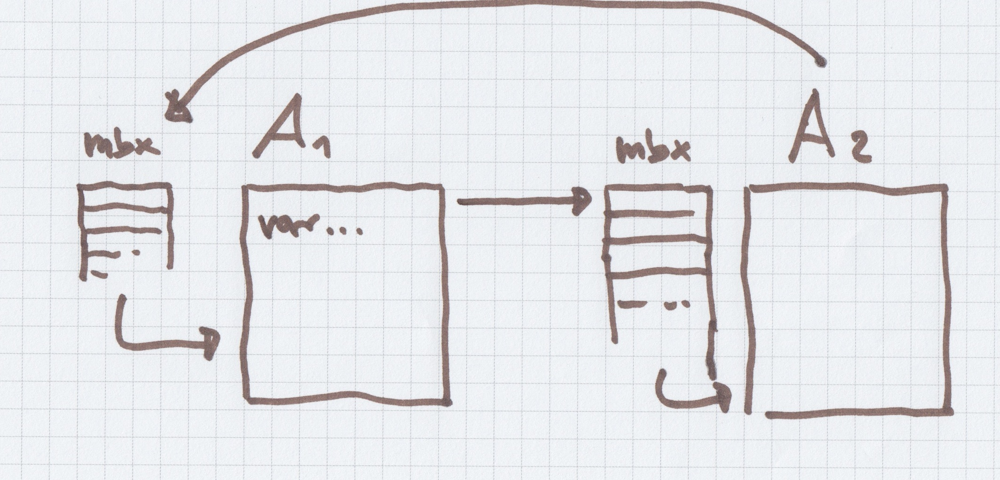
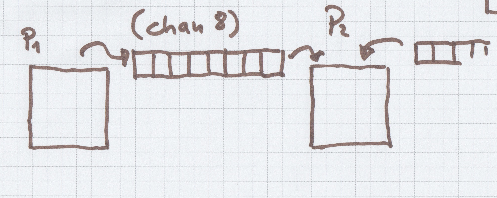

* not a model
doAsync1(function () {
doAsync2(function () {
doAsync3(function () {
doAsync4(function () {
})
})
})
[originally] Hewitt, Bishop, Steiger 1973
[originally] Hoare 1978
in core.async flavour
def receive = {
case RequestMore(elements) ⇒
demand += elements
push()
case PushMore ⇒
push()
case Cancel ⇒
context.parent ! Finished
softShutdown()
}
override def onSubscribe(sub: Subscription): Unit = {
subscription = sub
requestMore()
}
override def onError(cause: Throwable): Unit = ()
override def onComplete(): Unit = ()
override def onNext(element: T): Unit = {
requested -= 1
requestMore()
}
val flow = FlowFrom[Int].
map(_.toString). //creates an actor
filter(_.length == 2). //creates an actor
drop(2). //creates an actor
withSink(sink)
val g = FlowGraph { implicit b =>
val bcast = Broadcast[String]
val zip = Zip[Int, String]
in ~> bcast ~> count ~> zip.left
bcast ~> toUpper ~> zip.right
zip.out ~> out
}.run()